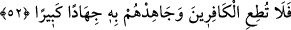
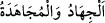

bulunduğunu görmeleri için nazar etmelerini diler.
52. O halde, kâfirlere boyun eğme ve bununla (Kur’an ile) onlara karşı büyük bir
cihâd et!
“O halde,” seni çağırdıkları başka ilâhlara ibâdet etme ve ataların dînine tâbi olma
konusunda “kâfirlere boyun eğme” onlara karşı sert ol, yumuşak davranma, Allah’ın
dînine dâvette ve hakkı ortaya koymada sâbit ol.
“ve bununla” yâni Kur’an ile onda bulunan öğütleri, peygamberlerini yalanlayan eski
ümmetlerin hallerini hatırlatan âyetleri tilâvet ederek “onlara karşı büyük” gevşeklik
karışmamış, şiddetli ve tam “bir cihâd et!”
“
” bütün gücüyle düşmana karşı koymaktır. Sefih kimselere karşı huccet
ve delillerle mücâhede, düşmanla kılıçla cihaddan daha büyüktür. Bu âyette
mücâhedenin kılıçla savaşmaya yorulmaması, ona izin verilmesinin hicretten bir zaman
sonra meydana gelmiş olmasındandır. Bu sûre ise Mekke’de nâzil olmuştur.
İmam Râğıb der ki: “Mücâhede el ve dil ile olur. Bir hadîste: “Kâfirlerle ellerinizle
ve dillerinizle mücâhede edin.”[234] diğer bir hadiste ise: “Müşriklerle mallarınızla,
canlarınızla ve dillerinizle mücâhede edin.”[235] buyrulmuştur.
“Dillerinizle mücâhede edin” demek, onların hoşlarına gitmeyen ve kendilerine ağır
gelen hicv, sert söz ve benzerlerini onlara duyurdun, demektir. Nitekim Meşâriu‘l-
eşvâk’ta böyle geçmektedir.
Fakir (Bursevî) der ki: Dil ile cihad, onlara karşı müdâheneyi terk etmek, fesatlarını
ortadan kaldırmak için insanları onlara karşı teşvik etmek mânasına da gelebilir.
Nitekim mal ile cihad, onlarla savaşan ve köklerini kazımak için uğraşanlara vermekle
olur.
Sonra “müşrikler” lafzında riya ve bid‘at ehline de işâret vardır. “Mücâhede edin”
hitâbı, ihlas ve sünnet ehline işârettir. Çünkü hak ehlinin bâtıl ehliyle her zaman,
özellikle de korku ağır bastığı zaman cihad etmeleri lâzımdır. Çünkü bu, cihadın en
fazîletlisidir. Nitekim Rasûlullah (s.a.): “En üstün cihad, zâlim sultana karşı hak sözü
söylemektir.”[236] buyurmuştur. Bunun en üstün cihad olmasının sebebi şudur: Düşmanla
cihad eden kimse ümit ve korku arasında gidip gelir. Galib mi mağlub mu olacağını
bilmez. Sultanın yanında olan kimse ise onun elinde mahkumdur. Ona hakkı söylediği ve
iyiliği emrettiği zaman kendisini ölüme atmış olur. Bunun korku yönü daha fazla olduğu
için cihad türlerinin en üstünü sayılmıştır. Semerkandî’nin Ebkâru’l-efkâr’ında böyle
geçmektedir.
Sonra âyette nefse ve sıfatlarına işâret vardır. Sen onlara itâat etme. Kur’an kanunu